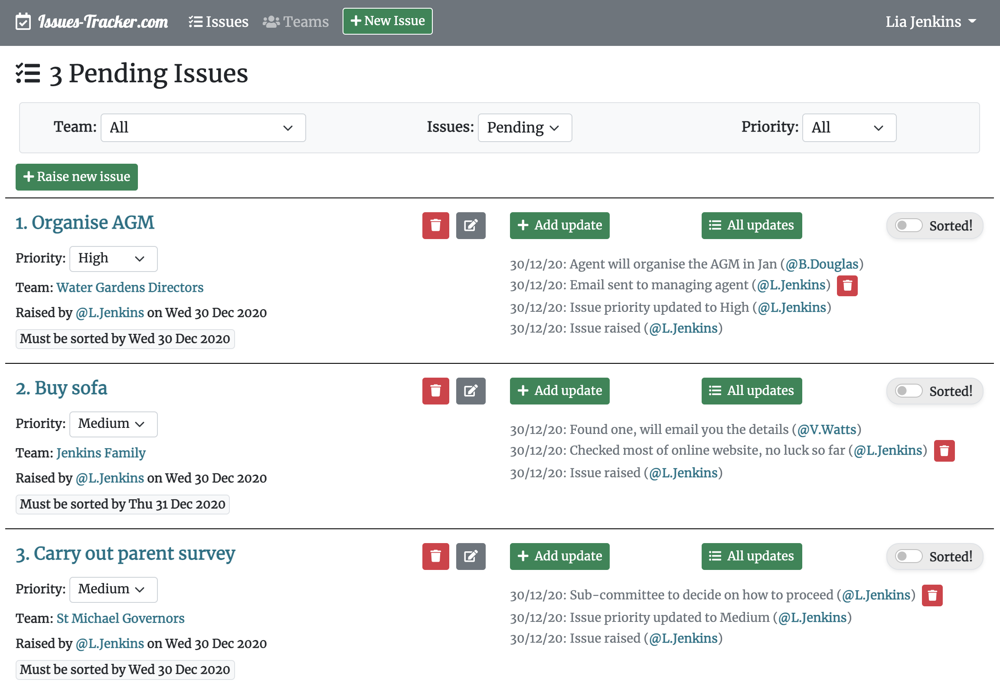

https://issues-tracker.com
Simple app for managing "issues". Useful for small teams to track progress on various action points. Optional deadlines and issue priority. Weekly automatic email updates.
